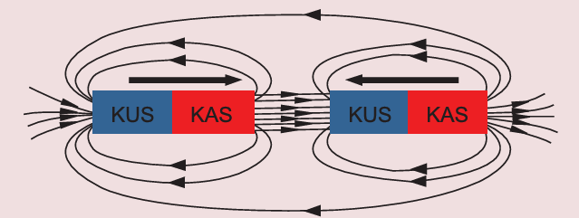

Jaribio namba 3: Kuchunguza mistari ya kani ya sumaku mbili zenye ncha zisizofanana
Lengo:
Kuchunguza mpangilio wa mistari ya kani ya sumaku mbili zenye ncha zisizofanana
Mahitaji:
sumaku mche mstatili mbili, karatasi nyeupe, unga wa chuma na meza
Hatua
1. Sambaza unga wa chuma juu ya karatasi nyeupe weka juu ya meza.
2. Panga sumaku mbili zenye umbo la mche mstatili juu ya karatasi nyeupe yenye unga wa chuma.
Angalia au sikiliza maelezo ya kielelezo namba 6.
Hakikisha ncha zisizofanana zinatazamana na zimewekwa karibu.
3.
Sogeza sumaku mche mstatili moja kidogo kuelekea kwenye sumaku mche mstatili nyingine.Je, nini kimetokea?
4.
Chora kwenye daftari lako umbo linaloonekana au linaloelezwa kwenye kielelezo namba sita.
Kielelezo namba 6: Mistari ya kani ya sumaku mbili za mche mstatili zenye ncha zisizofanana
Matokeo: Andika matokeo ya jaribio ulilolifanya.
Hitimisho: Andika hitimisho la jaribio ulilolifanya.